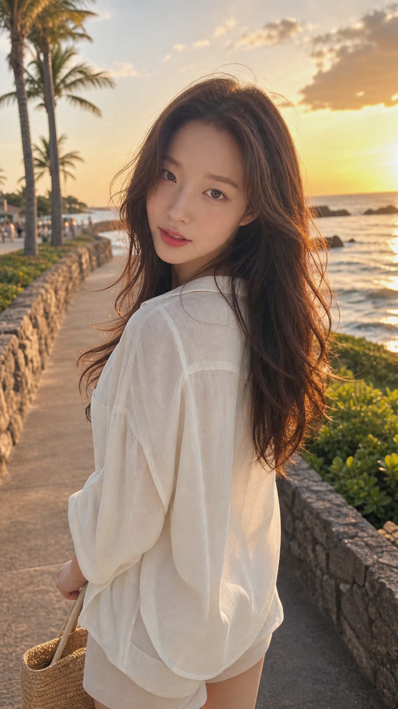

High-End Fashion Collection
SUMMER HAUTE COUTURE COLLECTION
동일한 여성 모델을 위한
60가지 프리미엄 여름 의상 디자인 컬렉션
업로드된 여성 레퍼런스의 청순하고 세련된 얼굴형, 눈매, 피부톤, 긴 갈색 머리와 전체 인상을 유지하면서 럭셔리 리조트부터 시그니처 디자이너 컬렉션까지 확장한 60종 여름 패션 룩북입니다. 각 카드는 이미지 생성기에 바로 사용할 수 있는 영문·한글 프롬프트와 복사 기능을 포함합니다.
Reference Model
60 Unique Summer Designs
Medium Full Shot
9:16 Vertical Editorial
English and Korean Prompts

No matching design found.
일치하는 디자인을 찾을 수 없습니다.
일치하는 디자인을 찾을 수 없습니다.